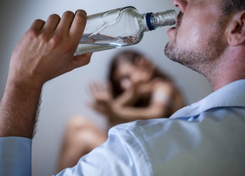

Влияние алкоголя на мужское здоровье
По мере формирования хронической алкогольной зависимости проявляются нарушения в работе всех внутренних органов и систем человеческого организма. Происходит ухудшение функционирования центральной нервной и сердечно-сосудистой систем. Алкогольные токсины меняют гормональный фон. Все это негативно сказывается на мужском здоровье и потенции.
- Понятие эректильной дисфункции
- Как связаны алкоголь и потенция
- Последствия хронического алкоголизма для организма мужчины
- Влияние алкоголя на психику мужчины
- Влияет ли кодирование от алкоголизма на потенцию
- Что лечить в первую очередь: алкоголизм или импотенцию
Понятие эректильной дисфункции
Половое бессилие или эректильная дисфункция - неспособность мужчины совершить половой акт. У человека есть желание заниматься сексом, но он по определенным причинам не в состоянии его реализовать. Половое бессилие может возникнуть под влиянием различных заболеваний, мочеполовых инфекций. Согласно данным статистики более 30% мужчин страдают от половой дисфункции. Во многих случая импотенция возникает из-за злоупотребления спиртными напитками. Основные симптомы болезни:
- значительное снижение эрекции во время полового акта или полное ее отсутствие;
- уменьшение продолжительности полового акта;
- преждевременное семяизвержение;
- отсутствие оргазма.
При появлении первых симптомов болезни следует обратиться к врачам узкой специализации: андрологу или урологу. Специалист определяет, что могло послужить причиной нарушения и направляет пациента на дополнительную консультацию к эндокринологу, невропатологу или наркологу. Лечение будет эффективно только при комплексном подходе.
Как связаны алкоголь и потенция
В мужской среде получило широкое распространение мнение, что небольшие дозы алкоголя способны усилить мужскую силу и продлить акт интимной близости. В некоторой степени эти утверждения верны. Этанол, попадая в кровь человека, снижает чувствительность нервных окончаний результатом чего может стать увеличение продолжительности полового акта. Также под действием спиртных напитков снижается выработка ГАМК, тормозящих процессы, происходящие в головном мозге человека. Человек становится более расслабленным и обостряются скрытые желания, в том числе и в интимной сфере. Но необходимо понимать, что регулярное употребление спиртных напитков дает обратный результат.
Ошибочно считают, что пиво не обладает столь же вредным эффектом как крепкие спиртные напитки. На самом деле пиво употребляется в больших количествах и вещества, содержащиеся в нем, снижают выработку мужского гормона тестостерона. Пристрастие к пиву также провоцирует формирование стойкой алкогольной зависимости. А алкоголизм прямой путь к импотенции.
При этом необходимо осознавать, что алкоголь не только влияет на потенцию, но и снижает репродуктивную функцию мужского организма. Под действием алкогольных токсинов снижается подвижность сперматозоидов, что значительно снижает возможность зачатия ребенка. К тому же в семьях, где мужчина регулярно выпивает высока вероятность рождения детей с аномалиями здоровья.
Последствия хронического алкоголизма для организма мужчины
Организм человека единая взаимосвязанная система. Систематическое употребление спиртных напитков разрушающе сказывается на функциях всех органов и систем, вызывая, в том числе и эректильную дисфункцию. Влияние алкоголя все системы организма в большей мере обусловливает развитие патологий, связанных с мужским половым здоровьем. Как алкоголь влияет на организм.
Влияние алкоголя на головной мозг и нервную систему человека
В мозгу человека при сексуальном возбуждении продуцируются особые вещества - нейромедиаторы. Они оказывают воздействие на определенные участки мозга, что вызывает прилив крови к половому органу. Алкогольные токсины имеют свойство блокировать выработку нейромедиаторов. Со временем, при постоянном употреблении спиртных напитков, нейромедиаторы перестают вырабатываться, что влечет за собой половую дисфункцию.
Алкогольные токсины разрушают нервные окончания, в том числе и в половом члене. Нарушается система передачи нервных импульсов, отвечающих за повышение мышечного тонуса и наступления эрекции. К тому же снижается чувствительность тканей в эрогенных зонах.
Последствия алкоголизма для эндокринной системы
Изменение гормонального фона оказывает значительное влияние на качество интимной жизни человека. Именно эндокринная система несет ответственность за выработку гормонов. Под воздействием алкоголя снижается продуцирование и активность половых гормонов. Алкогольные токсины влияют на работу гипоталамуса и гипофиза, которые в свою очередь отвечают за передачу и действие полового импульса.
Главным гормоном в организме мужчины считается тестостерон. Регулярное употребление спиртосодержащих напитков в значительной мере снижает выработку мужского гормона. Основные признаки пониженного тестостерона в мужском организме:
- нарастание жировых отложение по женскому типу(в области бедер, ягодиц и нижней части живота);
- дефицит мышечной массы тела;
- нарушение семяизвержения;
- снижение либидо, импотенция.
Пивной алкоголизм также вызывает дисбаланс в гормональной системе мужчины. В пиве в больших количествах содержится фитоэстроген - аналог женского полового гормона эстрогена растительного происхождения. Повышение концентрации эстрогена в мужском организме снижает выработку тестостерона. На этом фоне происходят не только изменения внешнего облика мужчин и снижает половое влечение.
Для восстановления гормонального фона при хроническом алкоголизме требуется комплексный подход. Совместная работа эндокринологов и наркологов. При своевременном отказе от употребления спиртных напитков и выполнении рекомендаций лечащих врачей гормональный баланс в организме восстанавливается.
Воздействие алкоголя на сердце и сосуды
В моменты эрекции происходит наполнение сосудов полового члена кровью, для этого необходима напряженная работа сердца и кровеносной системы. Но под действием алкоголя сосуды становятся хрупкими, пораженными холестериновыми бляшками. Алкогольные токсины провоцирует замещение здоровых тканей сердечной мышцы жировыми, что не позволяет сердцу работать в полную силу и закачивать в сосудистую систему необходимый объем крови. При подобных патологических изменениях не получается наполнить кровь половой член и эрекция бывает непродолжительной или отсутствует полностью.
Основные признаки нарушения работы сердца и сосудов:
- нестабильность артериального давления;
- частые головные боли;
- физическая слабость;
- одышка;
- учащенное сердцебиение;
- бледность кожных покровов.
Очень опасны при заболеваниях сердечно-сосудистой системы попытки усилить эрекцию с помощью медицинских препаратов. Подобные методы могут спровоцировать гипертонический криз, сердечный приступ или инфаркт.
Влияние алкоголя на психику мужчины
Нередко бывает, что на мужскую половую активность влияют и психологические факторы. Чтобы снять эмоциональное напряжение, раскрепоститься и усилить желание многие мужчины выпивают спиртное. На определенных этапах это помогает. Но постепенно формируется замкнутый круг, когда секс становится невозможным без дозы алкоголя, а способность удовлетворить партнера снижается. Все это связано с формированием психологической алкогольной зависимости. Дозы спиртного для получения удовольствия постоянно возрастают. У человека полностью пропадает половое влечение, смыслом жизни становится получение очередной дозы спиртного. Остальные аспекты жизни перестают его интересовать.
В подобных ситуациях требуется наркологическая помощь. При комплексном подходе с привлечением психотерапевтов и сексологов высоки шансы на излечение.
Влияет ли кодирование от алкоголизма на потенцию
Кодирование это метод запретительной терапии направленный на формирование отрицательного отношения к спиртным напиткам. В наркологической практике применяются следующие методы кодирования:
- Медикаментозный. В организм пациент вводятся специальные препараты на основе налтрексона или дисульфирама. Под действием данного типа медикаментов у человека формирует стойкое отвращение к спиртным напиткам или блокируются рецепторы, позволяющие получать удовольствие от алкоголя.
- Психологический. Специалисты воздействуют на психику алкоголика. На подсознательном уровне внушается негативное отношение к спиртным напиткам.
- Двойное кодирование. Сочетание медикаментозного и психологического способов кодирования хронических алкоголиков.
Часто, давая согласие на проведение терапии, пациенты интересуются как влияет кодирование на мужскую силу. Наркологи твердо утверждают, что кодирование абсолютно не изменяет потенцию.
Благодаря кодированию жизнь алкоголика полностью меняется. Проблемы с потенцией могут возникнуть на психологическом уровне. За долгие годы пребывания в состоянии алкогольного опьянения человек перестает понимать как правильно вести себя в трезвом мире. Он боится, что без спиртного интимная жизнь не будет яркой, или что он не сможет удовлетворить партнера. В подобных случаях помогают консультации психологов и сексологов. Во время индивидуальных сеансов снимают все психологические блоки и проблемы.
Что лечить в первую очередь: алкоголизм или импотенцию
Проблемы в интимной жизни пугают мужчин. Чаще всего они не связывают симптомы импотенции с алкоголизмом. Большинство из них еще сильнее начинают пить. Тем самым только усугубляя проблему. Любые попытки лечить половое расстройство, вызванное хроническим алкоголизмом, не будут эффективными. Важно в данном случае устранить первопричину импотенции - полностью отказаться от употребления спиртных напитков. На начальных этапах болезни иногда бывает достаточно изменить образ жизни, отказаться от алкоголя и интимная жизнь налаживается.
В более запущенных случаях требует специализированная наркологическая помощь. Только полное избавление от алкогольной зависимости и последующая работа с психологами и сексологами помогут вернуть полноценную половую активность.
В качестве профилактики следует с подросткового возраста информировать о влияние спиртных напитков на эрекцию и способность совершать половой акт. Необходимо понимать, что проблемы в интимной жизни решаются в кабинете психолога, а не с помощью спиртного.